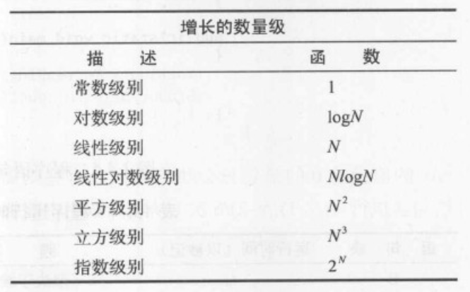
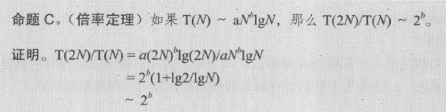

《算法4》读书笔记（第 1-3 章）
读一读这本算法经典教材。
第一章 - 基础
- Page 1欧几里得算法（gcd）：求两个非负整数的最大公约数，又称“辗转相除法”。以除数和余数反复做除法运算，当余数为 0 时，取当前算式除数为最大公约数。
int gcd(int x, int y) {
if (y == 0) return x;
int r = x % y;
return gcd(y, r);
}
- Page 79Dijkstra 双栈算数表达式求值算法：
- 该算法用于计算给定字符串算数表达式的值，子表达式均由括号分割（不处理优先级）。大致流程：
- 将操作数压入操作数栈；
- 将运算符压入运算符栈；
- 忽略左括号；
- 遇到右括号时，弹出所需数量的操作数，并将运算符和操作数的运算结果压入操作数栈。
#include <iostream>
#include <string>
#include <stack>
#include <cmath>
int parseInt(std::string::iterator& itr, std::string::const_iterator& end) {
std::stack<char> bits;
int num = 0;
for (;itr != end; ++itr) {
const auto ch = *itr;
const auto bitNum = ch - 0x30;
bits.push(bitNum);
// Look ahead to see if it's the end.
const auto nextBit = *(itr + 1);
if (nextBit < 0x30 || nextBit > 0x39) break;
}
for (auto i = 0; i < bits.size(); ++i) {
const auto ch = bits.top();
num += (pow(10, i) * ch);
bits.pop();
}
return num;
}
int dijkstra(std::string& str) {
std::stack<char> oprs;
std::stack<int> opds;
auto head = str.begin();
auto end = str.cend();
while (head != end) {
const auto ch = *head;
switch (ch) {
case '-':
case '*':
case '/':
case '+': {
oprs.push(ch);
break;
}
case ' ':
case '(': { break; }
case ')': {
const auto op = oprs.top();
auto v = opds.top();
opds.pop();
oprs.pop();
if (op == '*') v = opds.top() * v; // Keep the arithmetic sequence.
else if (op == '-') v = opds.top() - v;
else if (op == '+') v = opds.top() + v;
else if (op == '/') v = opds.top() / v;
opds.top() = v;
break;
}
default: {
// std::cout << +parseInt(head, end) << std::endl;
opds.push(parseInt(head, end));
}
}
++head;
}
return opds.top();
}
int main(void) {
std::string str = "((1 + 4) * 6)";
std::cout << dijkstra(str) << std::endl;
}
- Page 88使用“数组+双指针”实现队列：使用单链表实现可以获得更好的效率。
#include <iostream>
#include <array>
constexpr int N 20;
template <class T>
class Queue {
std::array<T, N> vec;
int counter = 0;
typename std::array<T, N>::iterator head;
typename std::array<T, N>::iterator tail;
public:
Queue() {
head = begin(vec);
tail = head;
}
void push(T t) {
if (tail == end(vec)) tail = begin(vec);
if (counter != N) {
*tail++ = t;
++counter;
}
}
T front() { return *head; }
bool empty() { return counter == 0; }
void pop() {
if (head == end(vec)) head = begin(vec);
if (counter > 0) {
head++;
--counter;
}
}
};
- Page 113~符号用来忽略较小的项。我们用 ~f(N) 表示所有随着 N 的增大除以 f(N) 的结果趋近于 1 的函数。我们用 g(N) ~ f(N) 表示 g(N)/f(N) 随着 N 的增大趋近于 1。常见的增长数量级函数：

- Page 115对于大多数程序，得到其运行时间的数学模型所需的步骤如下：
- 确定输入模型，定义问题规模；
- 识别内循环；
- 根据内循环中的操作确定成本模型；
- 对于给定的输入，判断这些操作的执行频率。
比如对于二分查找，其输入模型时大小为 N 的数组，内循环是一个 while 循环中的所有语句，成本模型是比较操作，最多的比较次数为 lgN + 1。
- Page 122倍率定理：

- Page 1138. Page 1139. Page 113### 第二章 - 排序
评论 | Comments